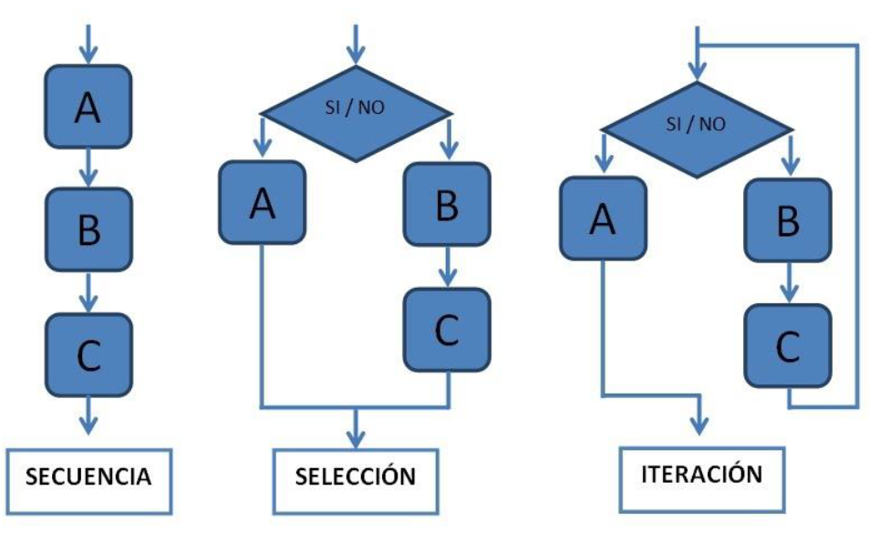

Módulo 1: Programación estructurada.
1.1. Conceptos basicos de programación estructurada.
1.1.1. Definición y características de programación estructurada.
La programación estructurada es una teoria de programación que busca mejorar la claridad, calidad y el tiempo de desarrollo de un programa.
A los finales de los años 70 surgió esta forma de programar, propuesta por Bohm-Jacopini quien decia que era posible escribir todos los programas y aplicaciones posibles utilizando solo 3 estructuras de control fundamentales. Dejando fuera a la instrucción de transferencia incondicional (GOTO).
Esta tecnica de programación conduce a mejorar la claridad, calidad y tiempo de desarrollo de un programa.
1.1.2. Elementos básicos de programación estructurada.
Como ya se menciono anteriormente, en la programación estructurada se utilizan solo 3 estructuras de control para evitar los problemas que generaba la instrucción de transferencia incondicional, estas tres estructuras son las siguientes:
- Estructuras secuenciales: Esta estructura se utiliza para que las instrucciones de un programa se ejecuten una después de la otra.
- Estructuras condicionales: Esta estructura plantea la selección de instrucciones entre varias opciones dependiendo del valor de una condición, cierto o falso o tambien dependiendo del valor de una variable.
- Estructuras repetitivas: Esta estructura ejecuta un conjunto de instrucciones repetidamente hasta que una condición sea cumplida, o mientras una condición sea verdadrea, dependiendo de la estructura de repetición.
Estas estructuras no necesitan estar aisladas unas de otras, pueden estar juntas o anidadas, cualquiera de ellas.
